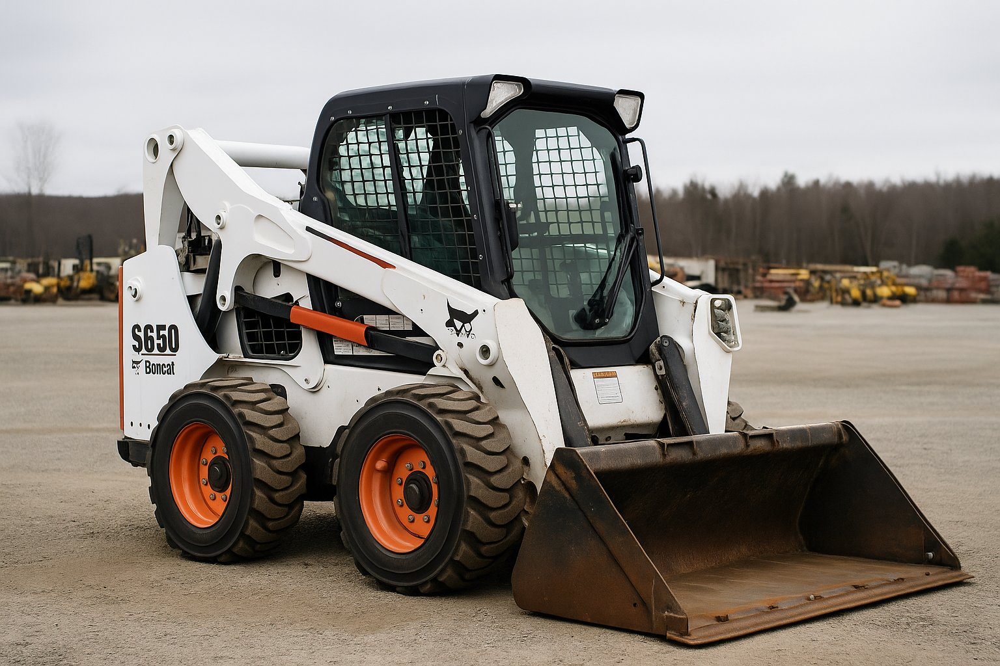

Price: $5,000
Overview
The Bobcat S650 is a rugged, high-performance skid steer loader engineered to tackle demanding tasks with ease. Designed with operator comfort and jobsite productivity in mind, it offers excellent lifting power, versatile attachments, and durable construction. Ideal for contractors, landscapers, and agricultural workers.
Specifications:
- Rated Operating Capacity: 2,690 lbs
- Engine Power: 74.3 hp
- Operating Weight: 8,327 lbs
- Lift Path: Vertical
- Fuel Type: Diesel
- Transmission: Hydrostatic
- Cooling System: Liquid
- Attachments Available: Bucket, Auger, Pallet Forks, Snow Blade
Key Features
- Enclosed cab with heating and air conditioning (optional)
- Advanced hydraulic system for high-efficiency work
- Easy-to-use joystick controls
- Quick-change attachment system
- Heavy-duty tires for all terrains
Best For
- Construction site material handling
- Landscaping and grading
- Farm and livestock management
- Snow removal and winter work